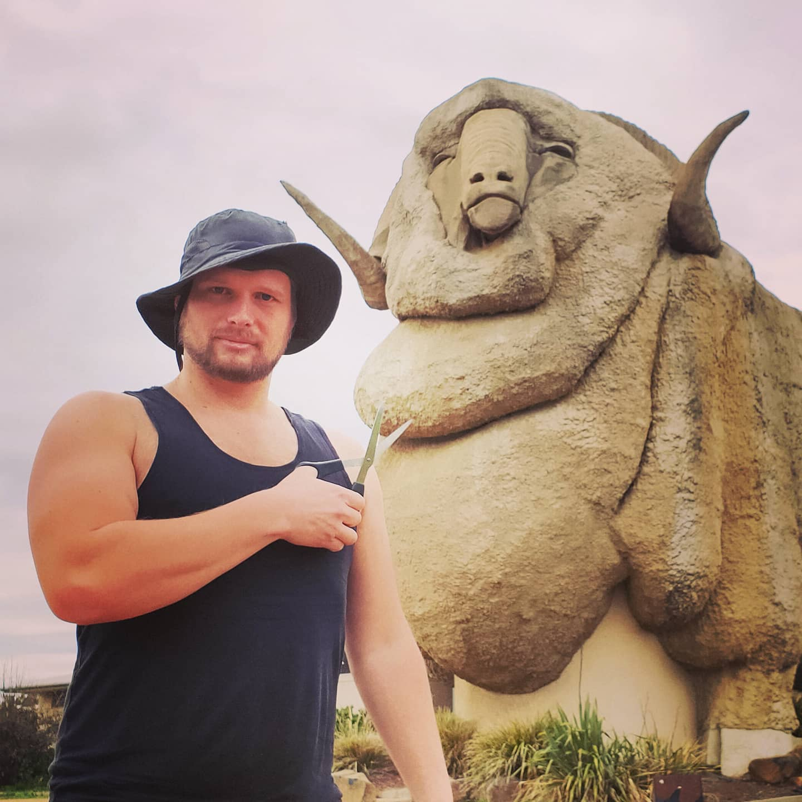

 Born in the heart of the Waikato region, Luke attended St Joseph's Primary, then St John's Secondary School before travelling to Europe where he attended the Bundesgymnasium Perchtoldsdorf. During his time in Austria, he played Rugby Union for the Donau Piraten Rugby Club, then based at Praterstern. He then went on to represent Austria in an under-20s match against Hungary. Luke completed high school back in Hamilton, New Zealand and then attended the Pacific International Hotel Management School in Bell Block, Taranaki. Whilst studying, he did two internships, first at Wharekauhau Country Estate, a luxury resort in the rural Wairarapa region, and Le Grand Hotel in Hamilton.
On completion of his studies, he moved to Melbourne where he found a job as a porter at the Marriott Hotel. After a couple years he found a job at the contact centre of Qantas Airways. Moving up in the ranks, Luke moved to Sydney to advance his career, and soon persued an MBA at the Australian Institute of Business.
The warmer Sydney weather encouraged Luke to take up water-based sports, Va'a and Dragon Boat Racing. Luke's highest acheivent in canoeing was winning a bronze medal at the 2016 Dragon Boat World Championships in Adelaide. He also qualified for the 2018 World Champs in Hungary, but that clashed with the Va'a World Champs in Tahiti which he competed. Luke qualified for the 2020 World Championships in both diciplines, with Va'a being hosted in Hawaii and Dragon Baots in France. Luckily they were a week apart so both were possible. Unfortunately, both were cancelled due to Covid-19 and his career in aviation has been impacted by the pandemic. Now with an uncertain career and lots more free time, Luke enrolled in the Coding Bootcamp at the Univeristy of Sydney.
You can follow Luke's career on LinkedIn, see his growing portfolio on GitHub, or look up his travelling anticts and attempt of photography on Instagram.